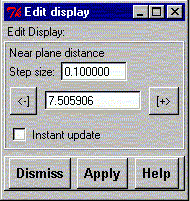

**************************************************************************
Edit display attributes widget
Leif Laaksonen CSC 1996
**************************************************************************
Define the distance to the near clipping plane. Pressing - and + signs decreases or increases the distance to the near clipping plane with the defined step length.
The new view will not be displayed before the "Display" command is applyed or the gOpenMol logo is pressed.
To update the display after the changed value click the "Instant update" button.

Line command: see define command
**************************************************************************
LUL/1996
**************************************************************************